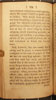
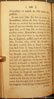
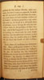
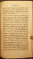
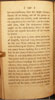
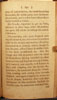
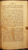
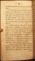
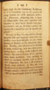
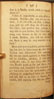

contents | previous | next WHILE Rosalie was thus, as Mrs. Vyvian believed, passing part of the time of her mother's absence as she had directed, that excellent but unhappy woman, Mrs. Vyvian herself, was suffering under the most acute anxiety. The absence of her son, the estrangement of her two daughters, and the cold and even severe conduct of the man to whom she had been sacrificed, made together a cruel combination of evils; which, however, did not so entirely occupy her mind, but that she felt for Rosalie, to whom she had ever shown the tenderest partiality, and to whom she would with delight have granted an asylum in her own house, had she not been deterred by the envy and ill-humour which her daughters had expressed, and terrified
at the hints they had given of an affection for her on the part of her son, which, if it should once reach the ears of Mr. Vyvian, would, she knew, so greatly enrage him, that he would forbid her ever receiving any of the Lessington family again. Timid and mild, and with nerves shaken and enfeebled by a long course of unhappiness, Mrs. Vyvian was unequal to contention with a violent, haughty, and unfeeling man, who disdained to listen to reason, and held all friendly attachments, every thing that did not coincide with self-interested motives, to be mere cant and pretence. He had never considered the Lessington family with an eye of favour; but while Lessington lived, he had been useful to him in electioneering matters, and therefore he, and of course his family, had been endured; but the apprehension of any attachment between young Vyvian and a person whom his father considered so infinitely beneath him, would not have been suffered a moment, and Mrs. Vyvian knew that on the slightest suspicion she should be
 View image of 224overwhelmed with menaces and reproaches, which she found herself altogether unable to sustain. This dread alone prevented her from hazarding a repetition of the language her daughters had held, and compelled her to submit to so great a deprivation as that of often resigning Rosalie's company, whose interesting gratitude, and innocent, yet sensible, conversation, formed one of her greatest pleasures, and was best calculated to soothe her wounded heart. Still, however, she was uneasy that so young and so pretty a woman should be consigned to the care of people of whom she had no very high opinion. She fancied they were low bred, and was persuaded that if the morals of Rosalie were in no danger among them, her delicacy of mind must suffer from the style of such company: when, therefore, she saw Montalbert, who, while Rosalie was really at Mr. Hillmore's, called upon his aunt as usual lest his absence might be remarked, she continually questioned him about these
) View image of 225 View image of 225people, and he, not willing to appear to know much about them, gave her such answers as served rather to increase her solicitude for her former protegéee, and her regret that she could not give her protection in her own house. Montalbert never loved his aunt so well as when he thus saw her interestd for Rosalie; and sometimes it seemed as if this interest was so strong, that she could not be angry at finding his sentiments so entirely agreed with hers. Half resolved to open his whole heart to her, and entreat her countenance, her protection, for his wife, he sat meditating what to say, when the entrance of Mr. Hayward, or some sentence Mrs. Vyvian uttered, again shook his resolution, and deterred him from entrusting to her a secret of so much consequence; while, if it still remained a secret to every body but to her, his Rosalie could derive no benefits from the partial information, for Mrs. Vyvian would still be deprived of the power of receiving her as Rosalie Lessington, and as the wife of
 View image of 226Montalbert it would be still more impossible. It was now time for her to return to Hampstead, where all Mrs. Vyvian could do was to receive her on those days when none of her own family were likely to call upon her, or if they did, to send her into another room. Montalbert, during the four or five days that were to be the last of his stay in England, passed a part of each with Mrs. Vyvian, who, while she thought it her duty to press him to begin a journey that had been so long delayed, began to be seriously uneasy about his health, which she thought was evidently declined. He was pensive and absent, spoke little, and had lost his appetite—symptoms that she fancied indicated a decline, and induced her to urge him with increased earnestness to begin his journey, in the persuasion that the winter in England was inimical to his constitution. Montalbert every day promised to fix the day of his departure; but every day brought with it some excuse:—his baggage, some things he had bespoke as
 View image of 227presents to his Italian friends, were not ready; his own servant was taken ill; he must wait the arrival of a friend from the country, with whom he had business relative to his family's northern property—and while this went on, he lived in a miserable state of restraint, never seeing his wife but for a short time in the presence of Mrs. Vyvian, unless she happened to be there of an evening, in which case he went home with her, but attended by a servant, under pretence that his horses were at a stable not far from the house of Mrs. Lessington. Such a state of constraint was insupportable. More passionately attached to Rosalie than before he became her husband, the idea of leaving her for weeks and months was become more terrible than that of death: he fancied it disgraceful to submit to divide himself from all he held dear, influenced merely by pecuniary considerations, and often resolved to acknowledge his marriage and brave the consequences; but then the fear of reducing to
) View image of 228 View image of 228poverty the woman he adored—of exposing to the inconveniences of indigence her whom he thought worthy of a throne, checked his resolution of making this dangerous avowal; and again he determined to leave her in the hope of returning to claim her, and place her in a situation of life which she seemed born to fill. Rosalie seized every opportunity that now presented itself to press his going.—She urged his former promises, his own acknowledgements of the necessity of his departure: again he promised he would go, but again found it impossible to tear himself from her. But now her mother returned, and their meeting must become more rare and more difficult; and at length, but not till after he had received another letter from his mother, Montalbert determined to go. The last interview he could obtain with his wife was short and hazardous. Neither of them could say farwel; and when he was gone, and Rosalie knew she should see him no more, she felt so depressed, that, apprehen-
 View image of 229sive of the remarks that might be made, she retired to her bed under pretence of a violent head-ach, though the pain she felt was in her heart. This pretence could not, however, be long continued, and Rosalie returned, though reluctantly, to the common business of life, while Montalbert, scarce knowing what he did, pursued his way to the sea coast from whence he was to embark for France, meaning to pass through that country to Italy; but the greater the distance became between him and the object of his love, the less supportable it became: a thousand times he was tempted to return, and rather hazard every future consequence than subject himself to the present misery of a separation so painful. Arrived on the borders of the sea, this distracting irresoulution redoubled. It was yet in his power to return to all he held dear on earth—a few leagues of land only were between them, but soon immense worlds of water would divide them, and
 View image of 230he was conscious, that the single circumstance of its being out of his power to return when he would, must increase all the impatience he now felt; yet his reason told him, that his temporary absence ought to be undergone, since it might secure the repose hereafter of the woman he loved. As it was now a time when multitudes of English, who had long been prevented by the war from visiting the continent, were hastening to France, Montalbert was not many hours waiting for a wind, before he met some of his acquaintance, from whom it was impossible for him to escape. The gaiety and vivacity of these men, fatigued without amusing the mind of Montalbert; they were, however, of some use to him in calling off his attention from the subject, on which it was painful and useless for him to dwell. One of his friends rallied his supposed melancholy, another rattled away on past adventures and future projects of his own; and, amidst this va-
 View image of 231riety of conversation, the wind becoming favourable, the whole party were summoned on board, and in a few hours Montalbert found himself in Calais. His friends, impatient to get to Paris, hastened on their way, while Montalbert was again left alone to indulge his uneasy reflections. The traveller, who quits England with anguish of mind, has often found a transient relief in the variety and novelty offered by his arrival in a country, which, though so near his own, offers scenes so unlike those he has been accustomed to. But this change had lost its power over the mind of Montalbert, haveing travelled so often between Italy and England through France, each country was equally well known to him; and relapsing into his former despondence, he wandered along the French coast, looking with aching eyes toward England, and again tempted to return to it.—At length, however, after two days indulgence of this weakness, for such he owned it was, he once more reasoned him-
) View image of 232 View image of 232self into a resolution to proceed, and though with an heart which became more heavy every league, he hastened towards Naples, making no stay in Paris, or any other town through which his route lay. While he was thus obeying the imperious dictates of duty, Rosalie, concealing the wretchedness of her heart, endeavoured to pass the time of this cruel absence in perfecting herself in those branches of knowledge most agreeable to him; but very unpleasant were the many hours she was obliged to pass among people who had no ideas in common with her, who were engaged in other pursuits, and who seemed to consider her, what indeed she really was, a being of quite another species, who, in being among them, was evidently displaced. The only time she passed with any degree of satisfaction, was that when she was admitted to sit with Mrs. Vyvian, and to converse with the Abbé Hayward.—Miss Vyvian was now married and gone, accompanied by her father and her sister, to
) View image of 233 View image of 233the seat of her husband's family in great parade. Her mother, of whom she had taken cold leave, sunk into deeper dejection than ever: not that she felt as a misfortune this more certain separation from a daughter, who had long ceased to return her maternal tenderness; but it seemed as if her form could no longer resist the sorrow inflicted upon her by the absence of a son she adored, aggravated by the ingratitude of his sisters. Rosalie appeared to be more dear to her than ever, and there was now no impediment to their being often together; but Mrs. Vyvian, whose health visibly declined, was not always well enough to leave her bed, or to be amused with Rosalie's endeavours to relieve her long hours of solitude by reading or music. When she was able, however, to sit up, the duties of her religion, which she fulfilled with the most scrupulous exactness, alone detained her from the society of Rosalie. Whatever might be the dejection of Mrs. Vyvian's
) View image of 234 View image of 234mind, her penetration was not blunted, and she saw that something unusual pressed upon the spirits of her young friend: again then she spoke to her of what she apprehended—"You are certainly not well, Rosalie, (said Mrs. Vyvian, as they were sitting alone together), or you are unhappy?"—"I am well, indeed, my dear Madam, (she replied); as to being unhappy, I am not particularly so—I own to you, that the continual round of company in which my mother is engaged is far from adding to the pleasantness of my life; and sometimes I languish for an abode in my native country, as solitary as our parsonage under the southern hills." "There is more in it than that, dear girl," said Mrs. Vyvian, with a look that expressed her incredulity. "You would not surely wonder if there were, (answered Rosalie). I have often wondered at my own inconsequence in not being more depressed, when I recol-
 View image of 235lect that, whenever I lose my mother, I shall become a friendless and destitute orphan." "Not, if I live, (said Mrs. Vyvian—then, pausing a moment, she added in a slow and solemn voice)—for, as I think, my early indulgence to my daughters, or rather to myself, in having you so much at Holmwood during your infancy, has perhaps been the means of estranging you from your family, I consider it as my duty to make you what little amends I can—much, alas! is not in my power, for the unintentional injury I have done you." The tears rose in the eyes of Rosalie as Mrs. Vyvian concluded this sentence. "O no, dearest Madam, (answered she)—your kindness to me, never, never, injured me—so far otherwise, that I think I should, but for that kindness, have been the most unhappy creature in the world. At least I know that the only moments for which I would wish to live
 View image of 236are those when you permit me to be with you." "And therefore it is, my love, that I think I have injured you. Your mother, your sisters are happy among acquaintance and parties of their own, from which you fly with disgust: nor is this all—I am sensible that you have refused a very advantageous match from the same prepossession." "I assure you, my dear Mrs. Vyvian, that, as far as I am able to judge, I should have refused Mr. Hughson, though I had never enjoyed the advantages of being admitted to Holmwood. Indeed, had I been in the most humble condition of life, I am sure I should have preferred remaining in it, and even embracing the hardest labour, to giving my person to a man from whom my heart recoiled." A deep and long-drawn sigh, as if some painful recollections had arisen at that moment, half interrupted the answer of Mrs. Vyvian, who said, "You are cer-
 View image of 237tainly right in the sentiment, Rosalie—but it is sometimes not in the power of young women to resist parental authority. However, admitting that a man, less disagreeable than you represent this Hughson to have been, should now present himself; tell me, Rosalie—answer me ingenuously—would he not be equally rejected?" The eyes of Mrs. Vyvian, which, though generally soft and languid, were very expressive, were fixed steadily on the countenance of Rosalie as she asked this question. Rosalie, who affected to be steadily at work, looked up, and met these penetrating eyes: a deep blush suffused her cheeks; she was conscious of it, and became more confused. Yet, making an effort to recollect herself, and to speak with composure, she said, "O nothing is so—so very unlikely, as that any man should have a preference for me!—I never thought whether I should refuse any other offer or no—because it is so improbable,
 View image of 238that it is hardly worth while to suppose about it." "Not so improbable as you affect to imagine, Rosalie—but you are not sincere. I do not wish, my dear, to distress you, and we will drop the discourse at this time; but another day, perhaps, I may talk to you further, for I have something very serious to say to you, and I think, Rosalie, you will not deceive me, since it may be very material to us both." More and more confused, and not doubting but that by some means or other Mrs. Vyvian had discovered her marriage, she was too much agitated to allow herself to consider, whether, if this were really the case, it was likely Mrs. Vyvian should speak as she had ever done; but trembling and breathless she hastened to put her work into the work-basket, and, affecting to understand what her friend had last said as an hint to depart, she smiled, and replying that she was always
) View image of 239 View image of 239 happy to answer any questions from her, and that she hoped always to be ingenuous with so good a friend, she hastened away, which Mrs. Vyvian did not oppose.
|
){kind=link}
){kind=link}
){kind=link}
){kind=link}
){kind=link}
){kind=link}
){kind=link}
){kind=link}
){kind=link}
){kind=link}
){kind=link}